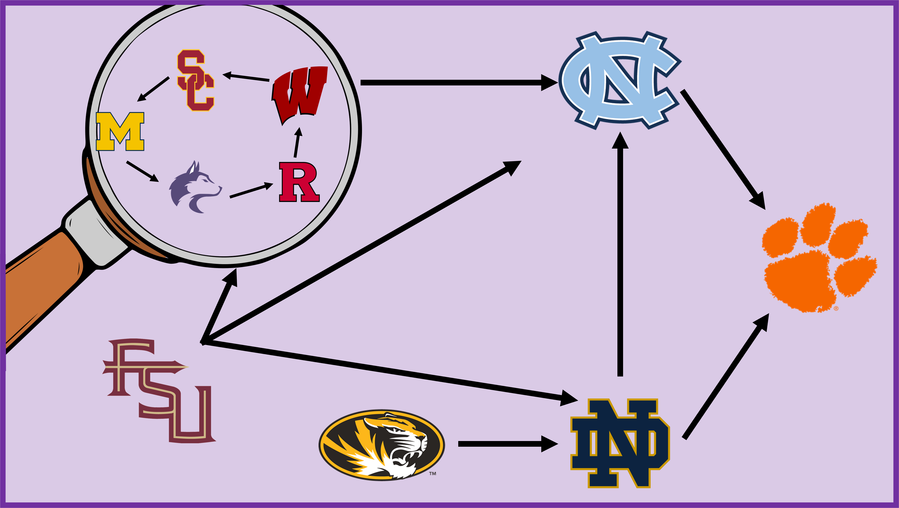

Topological College Football Rankings
A topological ordering of the top 100 teams using only the win-loss graph—no polls required.

Background and Description
College football is full of analysts trying to justify ranking one team above another. Using the only objectively fair measure we have—wins and losses—I constructed a topological ordering of the top 100 college football teams with simple graph theory.
Read the analysis
Walk through the graph construction and ordering methodology.
View on GitHub
Explore the scripts used to build and rank the win-loss graph.